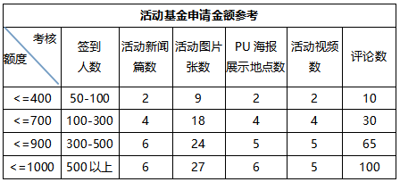

要办活动没经费
- 校园活动基金由“PU口袋校园”专为全国高校学生组织而成立，弥补学生办活动期间拉赞助不及时或经费不足的问题，鼓励学生更好地创办校园活动。
- 【活动入选】：
- 1、科技竞赛类、拓展挑战类、文化艺术类等活动形式更易入选；（注：例会、培训讲座、面试招新、出游聚餐等活动，不在活动基金资助范畴。）
- 2、需是通过校方审核且正式举办的真实活动。
- 【申请规则】：
- 1、申请对象：有发起活动权限的学生；
- 2、申请周期：每周仅限申请一次；
- 3、需在活动结束后7日内完结活动，否则视为自动放弃本次申请。
- 【金额参考】：
- 
- 【申请步骤】：
- 1、登陆PU发起活动并申请基金；联系本校校园管理人员申领PU海报，添加设计活动信息，并在张贴宣传时留下影像材料（照片即可）；
- 2、联系校园管理人员推荐活动申领活动基金；
- 3、活动期间安排现场同学使用PU签到与现场互动，并完善活动详情；
- 申请完结活动，等待基金审核结果。
- 【资金发放】：
- 1、苏州高校：需提供PU卡账号（PU口袋校园VIP专属联名卡）；PU卡办理方式：在PU[扑满]页面提交申请并填写基本信息，再至招商银行中新支行领取PU卡（苏州东环路时代广场）；其他地区高校：需提供有效支付宝或银行卡账号；
- 2、审核通过后7-15个工作日资金发放到账。
- 活动基金咨询电话：18112774044；PU卡咨询电话：400-8788593；想进一步了解可访问PU官方网站: http://pocketuni.net 或关注PU口袋校园微信公众号，校园活动基金最终解释权归苏州天宫信息技术有限公司所有。